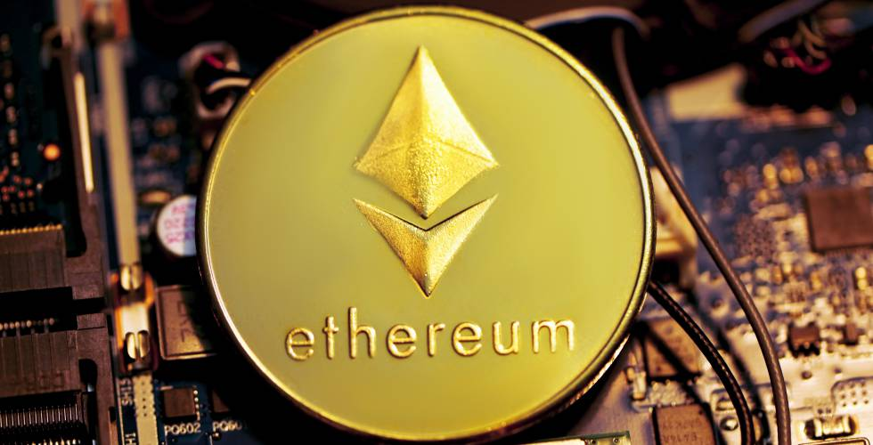

Criptomonedas
Ethereum
 Ethereum es una plataforma digital que adopta la tecnología de cadena de bloques (blockchain) y expande su uso a una gran variedad de aplicaciones. Ether, su criptomoneda nativa, es la segunda más grande del mercado.
La plataforma Ethereum fue creada en 2015 por el programador Vitalik Buterin, con la perspectiva de crear un instrumento para aplicaciones descentralizadas y colaborativas. Ether (ETH), su criptomoneda nativa, es un token que puede ser utilizado en transacciones que usen este software. Como bitcoin, ether existe como parte de un sistema financiero autónomo de pares, libre de intervención gubernamental.
Su precio Actual $4,283.25 USD
Jose D Castro L, Maracaibo, Venezuela